¿Qué Especialidades Ofrecemos?
Informática
Informática
____________________________________________________

- 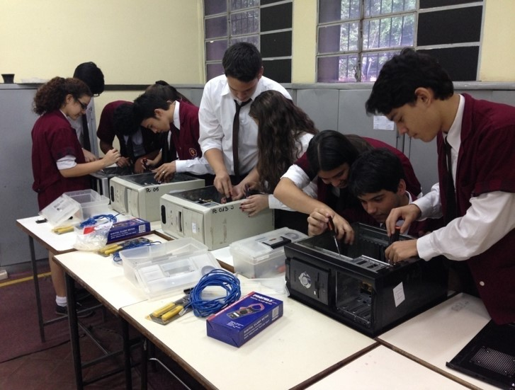


La informática tiene como objetivo cubrir la necesidad de información actualizada y oportuna que requiere la administración de las empresas, haciendo más eficientes sus labores lo que la lleva a ser más competitiva y a alcanzar los niveles que un mundo globalizado demanda.
PERFIL GENERAL
- El perfil profesional del Bachillerato Técnico en Informática pretende una sólida formación técnica, ética y humanística que le permita proyectar las competencias para incorporar y desarrollar programas informáticos, instalar (hardware y software), asistencia técnica, aplicación del pensamiento crítico y el método científico en los problemas propios de la especialidad, adecuándose a las exigencias de los cambios tecnológicos del mundo globalizado y acordes a las exigencias de la región.
PERFIL ESPECÍFICO
Al término de los cursos de formación del Bachillerato Técnico en Informática, se concibe un Técnico en Informática de Nivel Medio quien será capaz de:
- Emplear conocimientos científicos, humanísticos y tecnológicos para la práctica laboral de su especialidad y-o prosecución de estudios superiores.
Por consiguiente:
a. Planificar en base a un modelo, organizar, conducir y controlar trabajos en el área de su competencia.
b. Analizar y proponer soluciones a problemas informáticos acordes a su nivel de preparación.
c. Adaptarse a los cambios tecnológicos de su especialidad. - Aplicar con calidad los conocimientos tecnológicos e informáticos adquiridos en la ejecución de trabajos.
Por consiguiente:
a. Utilizar el pensamiento crítico, el método tecnológico y científico para el estudio y resolución de problemas.
b. Elaborar presupuestos de los proyectos y-o trabajos que le son encomendados bajo la supervisión de instancias superiores.
c. Utilizar eficientemente los recursos del hardware, software, y la literatura técnica correspondiente en formato impreso y digital. - Aplicar habilidades y destrezas para el uso y desarrollo de aplicaciones informáticas.
Por consiguiente:
a. Manejar con solvencia software de aplicaciones generales.
b. Desarrollar programas de aplicación de pequeño porte utilizando paradigmas de programación actual.
c. Implementar capacidades emprendedoras para desarrollar proyectos, producir trabajos originales o resolver problemas. - Desarrollar destrezas generales para el uso y mantenimiento de equipos informáticos.
Por consiguiente:
a. Instalar y configurar sistemas informáticos básicos (hardware y software).
b. Realizar asistencia técnica de equipos, insumos, productos y servicios informáticos básicos.
c. Asistir para la compra-venta de equipos informáticos básicos.
d. Utilizar con eficiencia equipos, procedimientos y técnicas habituales en la ejecución de trabajos de instalación y mantenimiento.
e. Montar, instalar y configurar una red de pequeña o mediana empresa. - Aplicar el pensamiento crítico y la ética en el manejo de informaciones y en el desempeño de sus funciones.
Por consiguiente:
a. Aplicar los procesos del pensamiento crítico en la elaboración de trabajos.
b. Comunicar información e ideas a múltiples audiencias, usando con solvencia una variedad de medios y de formatos.
c. Promover y practicar el uso seguro, legal y responsable de la información.
d. Demostrar actitud positiva frente al uso de las TIC´S como medio de comunicación interpersonal y grupal para apoyar la colaboración, el aprendizaje y la productividad.
e. Actuar con ética y responsabilidad en el manejo de equipos de terceros, instalación de software legal, calidad y veracidad de los componentes a instalar, así como el manejo eficiente de los tiempos para la realización de los trabajos encomendados.
PERFIL OCUPACIONAL
El campo ocupacional específico del técnico se define por su participación bajo supervisión o de manera independiente según requerimientos de terceros en: El desempeño eficiente y eficaz en empresas de servicios públicos y/o privados para:
- Planificar la implementación de software de gestión de datos (informatización de empresa) siguiendo el relevamiento de datos.
- Por consiguiente:
a. Identificar las necesidades de los usuarios.
b. Diseñar las recomendaciones técnicas a medida acordes a su nivel.
c. Recomendar (Sugerir-Diagnosticar) soluciones técnicas acordes a su nivel)
d. Programar e implementar software de gestión de datos para medianas empresas.
e. Elaborar documentaciones técnicas y planificar procesos de instalación y actualización de software. - Administrar recursos informáticos básicos.
- Por consiguiente:
a. Coordinar y gestionar recursos informáticos básicos (hardware y software).
b. Controlar y evaluar el uso de los recursos informáticos básicos.
c. Asesorar técnicamente en el mantenimiento y la compra-venta de equipos e insumos informáticos básicos a terceros. - Extensión profesional.
- Por consiguiente:
a. Capacitar al personal para operar equipos y dispositivos tecnológicos-informáticos.
b. Capacitar y-o ejercer la tutoría del personal para operar software de aplicaciones generales.
Mecánica Industrial
Mecánica Industrial
____________________________________________________


PERFIL GENERAL
- Aplicar el pensamiento crítico y el método científico para el estudio y solución de problemas en el campo tecnológico.
- Utilizar los conocimientos científicos y tecnológicos en las distintas fases de las actividades profesionales y en sus relaciones laborales.
- Utilizar con eficiencia aparatos y equipos, procedimientos y técnicas habituales en gabinete de ensayos.
- Interpretar y ejecutar diseños en proyectos y desarrollo de procesos de construcción, fabricación, mantenimiento y otros servicios propios de su especialidad.
- Manejar equipos como ser: maquinas, instrumentos, herramientas y otros servicios propios de su especialidad.
- Manejar las informaciones a través de: Libros, manuales, videos, catálogos u otros medios para solucionar los problemas técnicos de su área.
PERFIL ESPECÍFICO
Al término de los cursos de formación del Bachillerato Técnico en Mecánica Industial, se concibe un Técnico de Nivel Medio con:
- Elaborar proyectos mecánicos, diseñando y calculando equipos mecánicos como maquinas, herramientas y utillajes.
- Elaborar presupuestos de los proyectos y área de trabajo a su cargo en un taller industrial..
- Recomendar las especificaciones de las características eléctricas y mecánicas del equipamiento y materiales a ser empleados en la fabricación mecánica.
- Determinar procesos y procedimientos de fabricación mecánica, indicando los equipos, maquinas, instrumentos, herramientas, utillajes, materiales, tiempo y personal necesario.
- Emplear las maquinas, los equipos, los instrumentos, las herramientas y los procedimientos en el proceso de fabricación, construcción y mantenimiento mecánico.
PERFIL OCUPACIONAL
El campo ocupacional específico del técnico se define por su participación bajo supervisión o de manera independiente según requerimientos de terceros en: El desempeño eficiente y eficaz en empresas de servicios públicos y/o privados. Dicho técnico es:
- a. Técnico Mecánico en reparación y mantenimiento de maquinarias de alto porte.
- b. Capacitar al personal operativo a su cargo en la ejecución de las tareas de producción y servicios en el taller industrial.
- c. Prestar asistencia técnica promoviendo, recomendando las especificaciones y presupuestando en el sector de compra-venta conexa con la producción y los servicios.
- d. Acceder a cursos de nivel superior en el área de su especialidad y ejercer la docencia técnica.
Mecánica Automotriz
Mecánica Automotriz
____________________________________________________
- 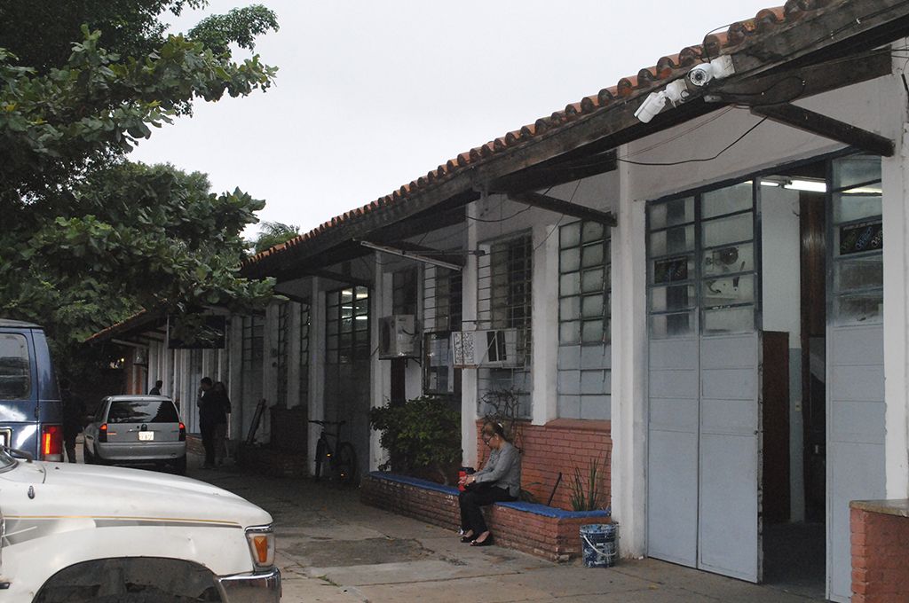

- 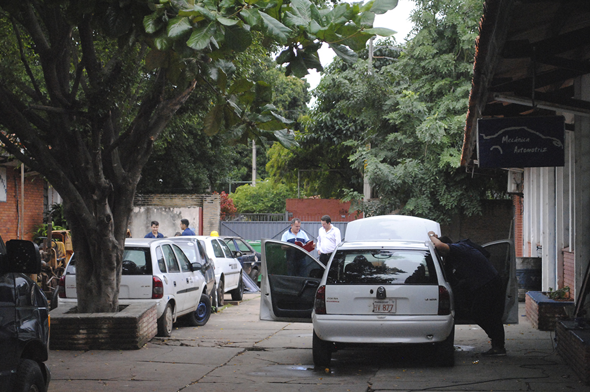

PERFIL GENERAL
- Conocimientos Humanísticos.
- Conocimientos Científicos.
- Conocimientos Técnológicos.
- Conocimientos Practicos.
- Profecional Eficiente y Eficaz.
PERFIL ESPECÍFICO
Al término de los cursos de formación del Bachillerato Técnico en Mecánica Automoriz, se concibe un Técnico de Nivel Medio con:
- Conocimientos sobre herramientas, instrumientos de medición y maquinarias auxiliares.
- Conocimientos sobre motores de combustión interna Naftero y Diesel.
- Conocimientos sobre elementos de chasis del vehículo(Transmisión, Direión, Freno, Suspención).
- Conocimientos sobre dibujo Técnico Automotriz.
- Conocimientos sobre cálculos mécanicos referente al automovil.
PERFIL OCUPACIONAL
El campo ocupacional específico del técnico se define por su participación bajo supervisión o de manera independiente según requerimientos de terceros en: El desempeño eficiente y eficaz en empresas de servicios públicos y/o privados. Dicho técnico es:
- a. Técnico Mecánico en reparación y mantenimiento de vehículos.
- b. Capaz de organizar, planificar y administrar un taller mecánico.
- c. Capaz de realizar Asesoramiento Técnico.
- d. Eficiente en la atención al cliente; en ventas de vehículos y/o repuestos.
Construcciones Civiles
Construcciones Civiles
____________________________________________________


- 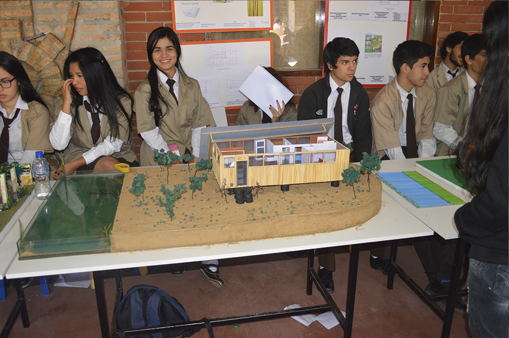

Perfil del Bachiller Técnico Industrial de Construcciones Civiles
Funciones Específicas
Al término de los cursos de formación del Bachillerato Técnico en Construcciones Civiles, se concibe un Técnico de Nivel Medio quien será capaz de:
- Planificas, orgazinar, programar, dirigir y controlar todo tipo de obras civiles de una edificación de hasta 250,00m.
- Investigar las características y mejor uso de los materiales de construicción y los métodos de aprovechamiento de estos.
- Investigar el rendimiento de la mano de obra, de equipos y maquinarias.
- Diseñar sistemas constructivos.
- Diseñar y poner en marcha sistemas de gestión de calidad, planificar, organizar y administar proyectos de obras civiles, ejercer fiscalizaciones.
- Ser un profecional competente para enfrentar con eficiencia los desafios actuales y futuras en el campo de las obras de infraestructura con domino de la deciplina y creatividad para resolver problemas.
- Capacidad de administrar recursos humanos y materiales, concebir y crear empresas.
Caracteristicas del Egresado
- Trabaja bajo la dirección y supervisión de ingenieros Civiles o Arquitectos.
- Esta habilitado para trabajar en obras civiles como asistente técnico de un Ingeniero o un Arquitecto.
- Elabora planos para viviendas y estructuras de planta alta, memorias constructivas y planillas de cómputo métrico como también lista elabora listas para la construcción.
- Efectúa metrajes y controles en los avances de la obra. Conoce normas de seguridad higiene en el trabajo, realiza planteos y revelamientos (planimétricos y altimétricos de terrenos y edificios).
- Conoce, gestiona y aplica la legislación laboral, reglamento de la empresa, permisos municipales y cierre de la obra.
- Controla la calidad de la construcción y reconoce materiales, control de su ingreso y salida.
Electrónica
Electrónica
____________________________________________________
- 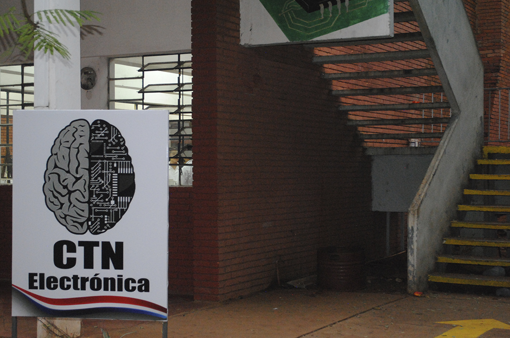
- 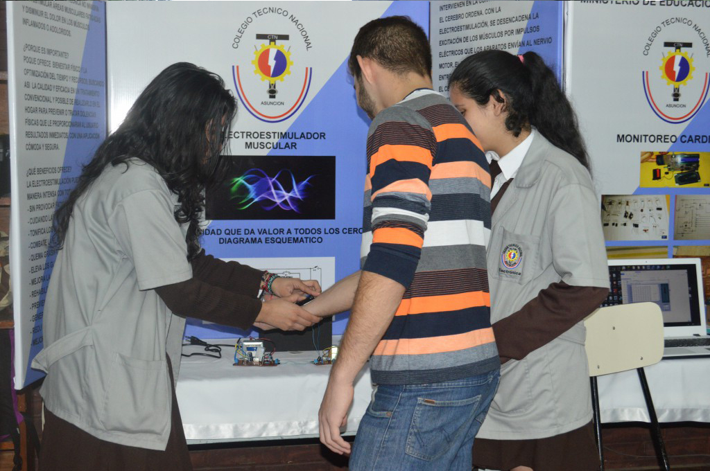


PERFIL GENERAL
- Perfil general del egresado El Egresado Técnico en Electrónica debe ser capaz de desarrollar y aplicar conocimientos científicos, humanísticos, tecnológicos y prácticos esenciales, que le permitan desarrollar actividades específicas de su profesión, con espíritu crítico y creador mediante el trabajo en equipo y multidisciplinario para que pueda enfrentar la vida y el mundo en forma competente, justa y solidaria, en el marco del desarrollo sostenible.
PERFIL ESPECÍFICO
Al término de los cursos de formación del Bachillerato Técnico en Electrónica, se concibe un Técnico de Nivel Medio quien será capaz de:
- Proyectar, componentes y equipos de electrónica analógica y/o digital, con tecnología electrónica estándar y de baja o mediana complejidad
Por consiguiente:
a. Realizar ensayos y mediciones eléctricas y electrónicas en dispositivos, componentes, equipos e instalaciones con electrónica analógica y/o digital, estándar de baja o mediana complejidad
b. Operar componentes, productos y equipos con electrónica analógica y/o digital
c. Realizar los mantenimientos, predictivo, preventivo, funcional operativo, y correctivo de componentes, productos y equipos con electrónica estándar, analógica y/o digital, de baja o mediana complejidad - Aplicar con calidad los conocimientos adquiridos en la ejecución de trabajos.
Por consiguiente:
a. Interpretar especificaciones técnicas de máquinas, equipos, instrumentos y herramientas.
b. Montar dispositivos y componentes con electrónica analógica y/o digital, estándar de baja o mediana complejidad.
c. Realizar la selección, asesoramiento y comercialización de dispositivos, componentes, productos y equipos con electrónica analógica y/o digital, estándar de baja o mediana complejidad
PERFIL OCUPACIONAL
Cada uno de estos alcances particulares sobre la electrónica de los equipos, componentes, productos e instalaciones; en los ámbitos de control, telecomunicaciones, instrumentos, o electrónica industrial; tendrán en cuenta criterios de seguridad, cuidado del ambiente, ergonomía, calidad, productividad, y costos; según las definiciones estratégicas surgidas de los estamentos técnicos y jerárquicos correspondientes con autonomía y responsabilidad sobre su propio trabajo y sobre el trabajo de otros a su cargo.
Electromecánica
Electromecánica
____________________________________________________
- 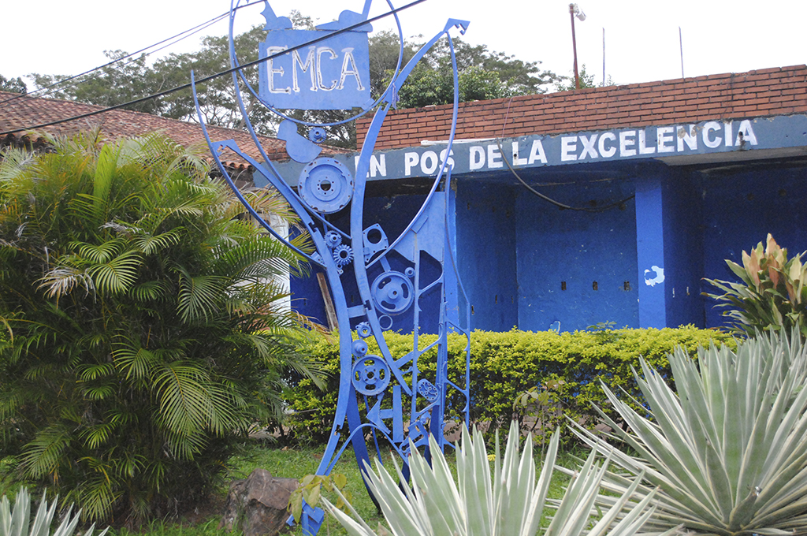


- 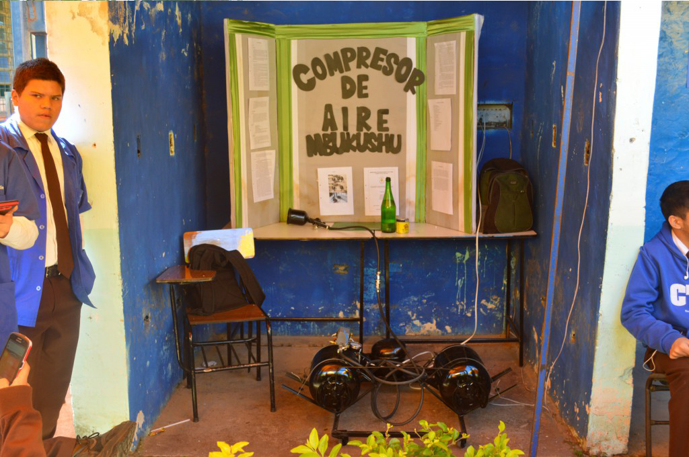
PERFIL GENERAL
- Perfil general del egresado El Egresado Técnico en Electromecánica debe ser capaz de desarrollar y aplicar conocimientos científicos, humanísticos, tecnológicos y prácticos esenciales, que le permitan desarrollar actividades específicas de su profesión, con espíritu crítico y creador mediante el trabajo en equipo y multidisciplinario para que pueda enfrentar la vida y el mundo en forma competente, justa y solidaria, en el marco del desarrollo sostenible.
PERFIL ESPECÍFICO
Al término de los cursos de formación del Bachillerato Técnico en Electromecánica, se concibe un Técnico de Nivel Medio quien será capaz de:
- Proyectar y diseñar sistemas mecánicos, eléctricos, electromecánicos, neumáticos, oleohidraúlicos, de accionamiento y control, herramientas y dispositivos en proyectos de plantas, y en adaptaciones, ampliaciones, optimizaciones y mejoras, de acuerdo a la normativa vigente. Es capaz de identificar el alcance y los límites de su participación en el diseño y verificar la lógica recíproca entre el diseño y el proceso.
Por consiguiente:
a. Interpretar las características técnicas y funcionales de los equipos e instalaciones a diseñar.
b. Desarrollar proyectos de equipos e instalaciones y sus componentes.
c. Desarrollar proyectos eléctricos de circuitos, componentes y de control de automatismos. - d. Ejecutar y/o dirigir y/o supervisar proyectos y diseños electromecánicos.
- Aplicar con calidad los conocimientos adquiridos en la ejecución de trabajos.
Por consiguiente:
a. Realizar la puesta en marcha, control y parada de equipos, instalaciones y dispositivos de accionamiento y control de producción.
b. Instalar circuitos y sistemas de instalaciones industriales.
c. Realizar e interpretar ensayos de materiales y ensayos eléctricos, mecánicos y electromecánicos.
PERFIL OCUPACIONAL
Del análisis de las actividades profesionales que se desprenden del Perfil Profesional, se establecen como habilitaciones para el Técnico: -Realizar las fases del proyecto de: componentes, equipos e instalaciones: mecánicas, eléctricas, electromecánicas, térmicas, hidráulicas, neumáticas, y oleohidráulicas. Sistemas neumáticos y oleohidraúlicos. Sistemas estacionarios, móviles y de transporte. Circuitos y/o sistemas de distribución de energía. Control de automatismo. Herramientas y dispositivos. Programas de mantenimiento.
Electricidad
Electricidad
____________________________________________________
- 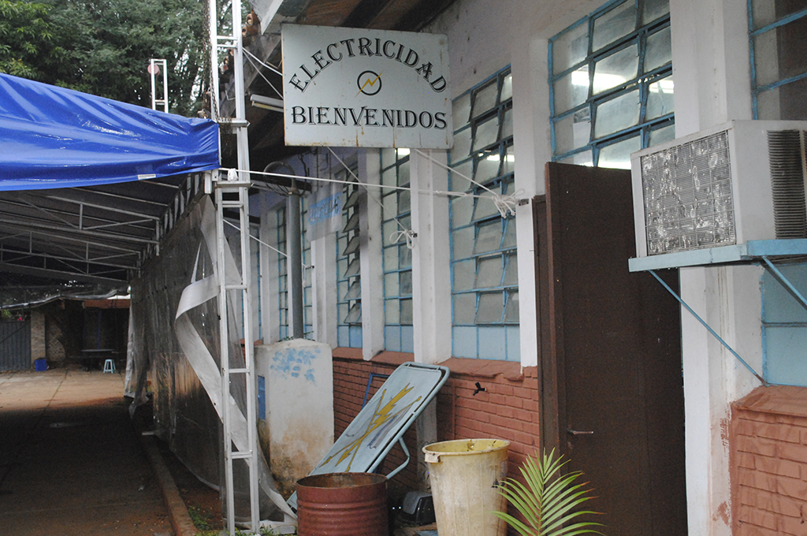


PERFIL GENERAL
- El Bachiller en electricidad será completamente para acceder y desenvolverse laboralmente. En las funciones de Proyectar, Montar, Instalar, Operar, Matener, Gestionar y Supervisar recursos para la ejecución de instalaciones eléctricas tanto en locales Residenciales y como Industriales, en baja tensión, en base a proyectos realizados, según normas técnicas, ambientales, estándares de calidad y seguridad.
PERFIL ESPECÍFICO
Al término de los cursos de formación del Bachillerato Técnico en Electricidad, se concibe un Técnico de Nivel Medio quien será capaz de:
- Elaborar proyectos de instalaciones eléctricas residenciales e industriales, en baja tensión relacionando los aspectos creativos con la tecnología específica.
- Montar los materiales, equipos y otros componentes eléctricos de acuerdo con las exigencias del proyecto.
- Instalar los Circuitos operacionales y de control en baja tensión de acuerdo con los estándares y especificaciones técnicas.
- Operar y controlar dispositivos, mecanismos, máquinas y otros componentes eléctricos en situación de trabajo conociendo las causas y efectos de su operación.
- Identificar, prevenir y/o corregir defectos en instalaciones y/o máquinas conforme a los programas de mantenimiento.
- Planificar, gestionar, administrar, coordinar las acciones necesarias en orden cronológico.
- Controlar y supervisar la ejecución de la instalación siguiendo la planificación del proyecto, las normas de seguridad y salud ocupacional.
PERFIL OCUPACIONAL
El campo ocupacional específico del técnico se define por su participación bajo supervisión o de manera independiente según requerimientos de terceros en: El desempeño eficiente y eficaz en empresas de servicios públicos y/o privados.
El Bachiller técnico en electricidad puede ejercer sus funciones desempeñándose de forma independiente o en relación de dependencia en servicios de mantenimiento , instalación y/o reparación de sistemas eléctricos como:
- a. Auxiliar en el diseño e implementación de sistemas eléctricos.
- b. Experto en talleres de instalaciones eléctricas.
- c. Instalador de redes eléctricas residenciales, comerciales e industriales.
- d. Asesor comercial en accesorios y materiales eléctricos.
Química
química industrial
____________________________________________________
- 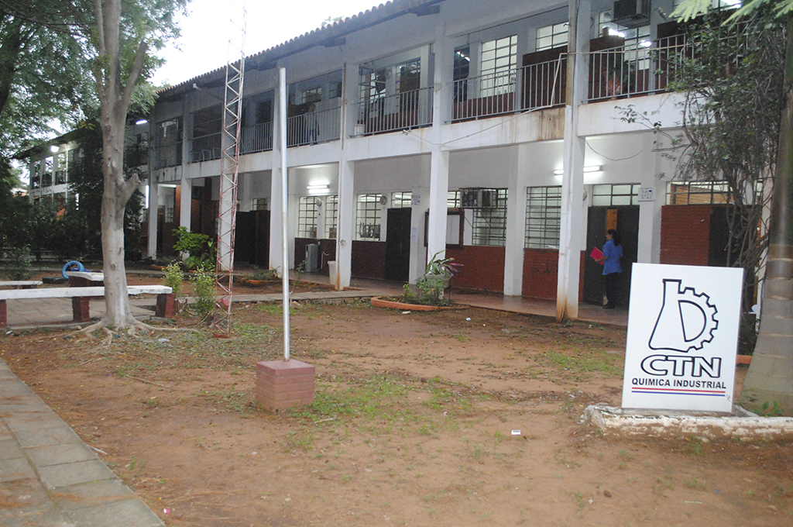
- 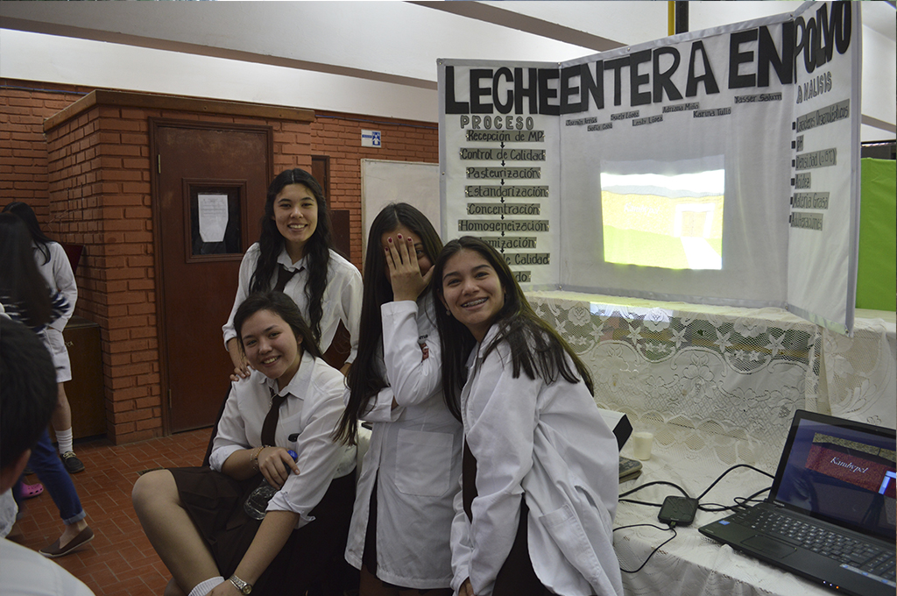


PERFIL GENERAL
- Perfil general del egresado El Egresado Técnico en Química Industrial debe ser capaz de desarrollar y aplicar conocimientos científicos, humanísticos, tecnológicos y prácticos esenciales, que le permitan desarrollar actividades específicas de su profesión, con espíritu crítico y creador mediante el trabajo en equipo y multidisciplinario para que pueda enfrentar la vida y el mundo en forma competente, justa y solidaria, en el marco del desarrollo sostenible.
PERFIL ESPECÍFICO
Al término de los cursos de formación del Bachillerato Técnico en Química Industrial, se concibe un Técnico en Química de Nivel Medio quien será capaz de:
- Emplear conocimientos científicos, humanísticos y tecnológicos para la práctica laboral de su especialidad y-o prosecución de estudios superiores.
Por consiguiente:
a. Acompañar el desarrollo de nuevos productos y procesos industriales, aplicando técnicas analíticas apropiadas.
b. Realizar proyectos industriales, efectuando cálculos de presupuestos concernientes a: Costo de materia prima. Costo de producción. Costo de instalaciones edilicias. Rentabilidad.
c. Interpretar proyectos de industrias químicas. - Aplicar con calidad los conocimientos adquiridos en la ejecución de trabajos.
Por consiguiente:
a. Interpretar especificaciones técnicas de máquinas, equipos, instrumentos y herramientas.
b. Calcular la capacidad de producción de las máquinas o equipos que intervienen en el proceso.
c. Aplicar normas de seguridad e higiene industrial y de preservación ambiental durante la práctica profesional. - Aplicar habilidades y destrezas para el uso y control de calidad de productos.
Por consiguiente:
a. Controlar la calidad de materias primas y productos acabados, mediante análisis industrial ajustado a normas nacionales e internacionales vigentes según requerimientos técnicos específicos.
b. Controlar los servicios de operación de equipos, así como su instalación y mantenimiento conforme a especificaciones técnicas.
c. Implementar capacidades emprendedoras para desarrollar proyectos, producir trabajos originales o resolver problemas. - Desarrollar destrezas generales para el control de producción y las relaciones humanas.
Por consiguiente:
a. Calcular la capacidad de producción de las máquinas o equipos que intervienen en el proceso.
b. Elaborar informes técnicos referentes a tareas a su cargo.
c. Supervisar grupos de trabajo en el marco del respeto y la ética profesional.
d. Realizar asistencia técnica de compra-venta y utilización de productos químicos para determinados procesos industriales.
PERFIL OCUPACIONAL
El campo ocupacional específico del técnico se define por su participación bajo supervisión o de manera independiente según requerimientos de terceros en: El desempeño eficiente y eficaz en empresas de servicios públicos y/o privados.